First, you should be familiar with the game Triplanetary from Steve Jackson Games. In particular, you'll want to read the parts of the 2018 Rules pertaining to astrogation.
You can plot your course by clicking on the map or entering the burns into the Mission Log. Your ship is the blue Tranpsort counter. The green square shows where you'll end up if you coast. The green circles show where you would end up if you burned in one of the six directions. Click on one of the possible locations and the map and log will be updated. You can edit the log and the map will be updated. Adding 0s means you are coasting, backspacing over the last character undoes the last turn.
Not that this little toy is still under development. Lots of things are don't work or lack polish.
Earth to Ganymede using as little fuel as possible.First, you should be familiar with the game Triplanetary from Steve Jackson Games. In particular, you'll want to read the parts of the 2018 Rules pertaining to astrogation.
If your ship begins the scenario on a planet you will see red circles in the surrounding hexes you can 'boost' to. Click one and you'll see the ship counter appear on the map. Green circles appear around your ship, click on one to accelerate in that direction. Your ship will move and you'll see new green circles for further navigation. Your course so far is shown as a blue line, and blue circles are your previous positions.
The mission log records all you have done so far. You can copy this string if you want to share your brilliant navigation with others, and you can paste in a log and it's similar to loading a saved game. You could even edit the log instead of clicking on the map.
Not that this little toy is still under development. Lots of things are don't work or lack polish.
Got it!Congratulations!
The trip took turns and units of fuel.
Got it! 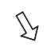
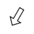
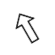
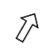
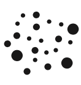
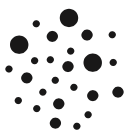
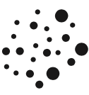
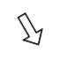
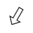
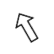
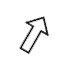
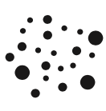
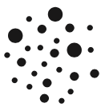
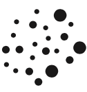